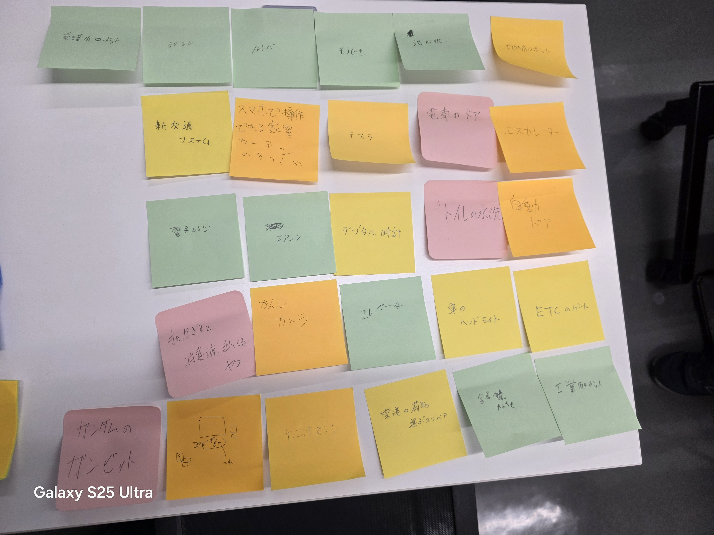

プログラミングで動かしているもの

テスラ等の自動車、スマートホーム家電、エスカレーター、ETC、ロボットなど
・テスラの障害物検知システム
1.モーターを起動する
2.前方に人や障害物がないかカメラで確認
3.2であった場合→速度を制御して落とす、ハンドルを切って避ける
2でなかった場合→そのままの速度で走行
・エスカレーター
1.人がいるかセンサーで検知
2.いる場合→速度を上げる
いない場合→止まるか速度を緩めて電力消費を少なくする
・プログラミングでできそうな事
服についた花粉や黄砂などを吸い取ってくれるクローゼット